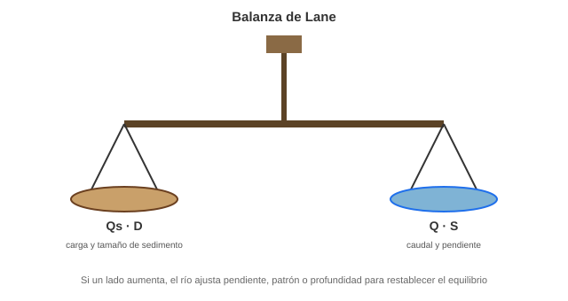
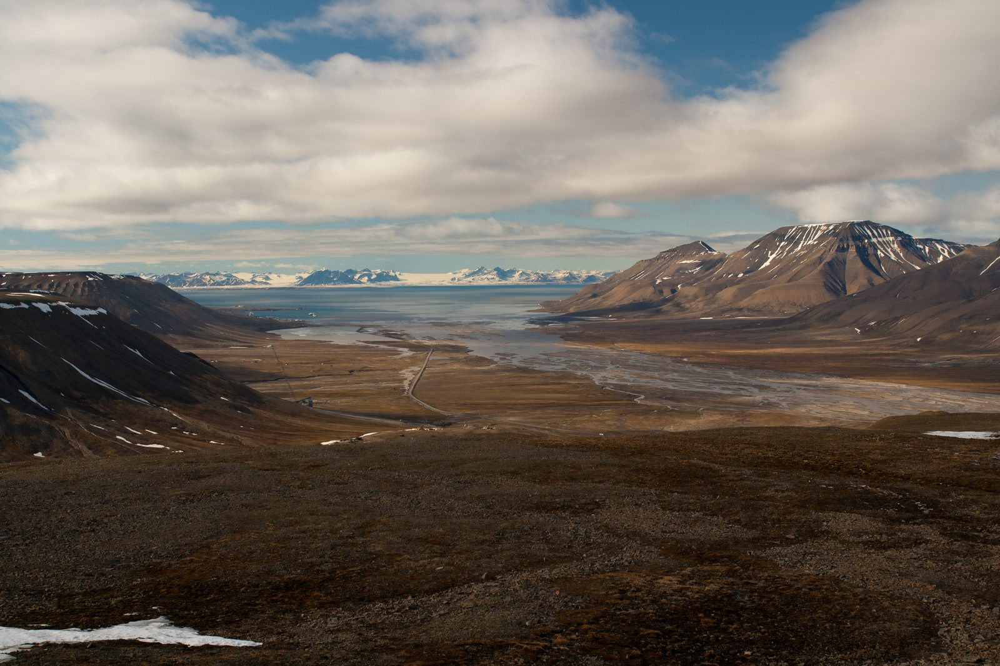
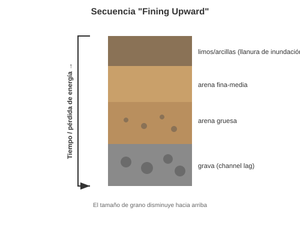
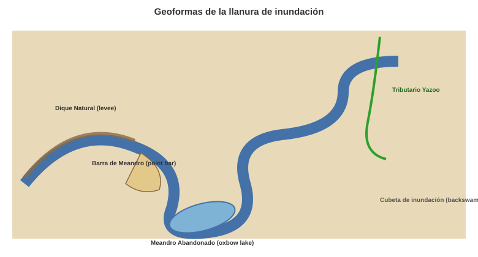
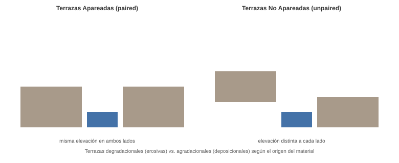
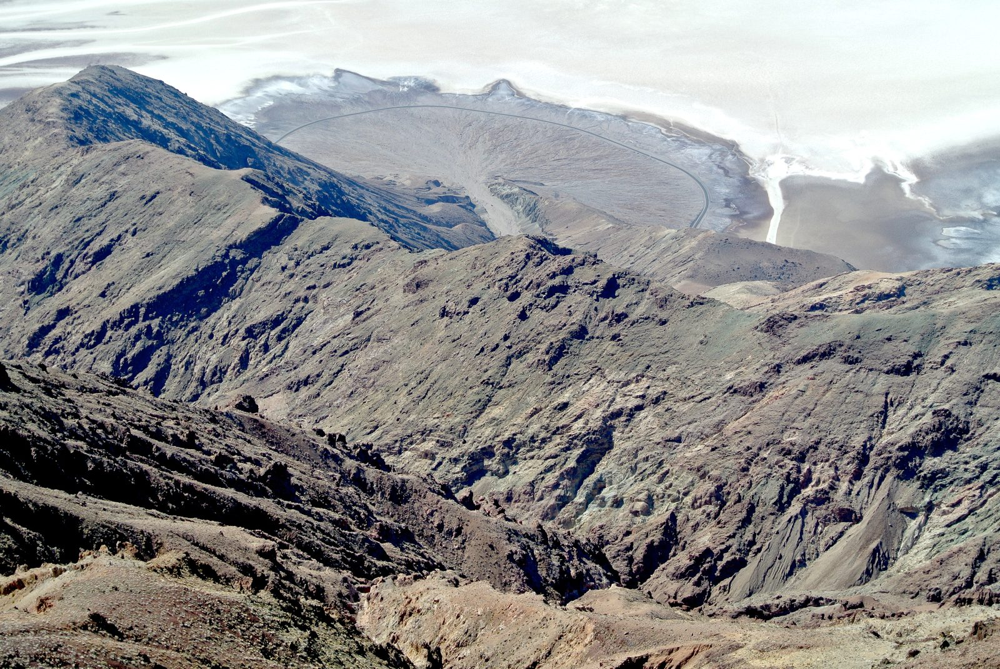

Geomorfología de Ambientes Fluviales#
Este documento aborda los conceptos y procesos fundamentales que rigen la dinámica de los ríos, su clasificación morfológica y las geoformas resultantes, esenciales para la interpretación del paisaje.
Important
Objetivos de aprendizaje:
Comprender el equilibrio dinámico de un río a través de la Balanza de Lane.
Identificar y diferenciar los tipos de canales fluviales (meándricos, trenzados, rectos) y sus condiciones de formación.
Describir las características sedimentológicas de los depósitos aluviales y las geoformas de la llanura de inundación.
Analizar la formación de terrazas fluviales y abanicos aluviales como indicadores de cambios ambientales y de base.
1. La Balanza de Lane#
La Balanza de Lane (o Ley de Lane) es un principio fundamental que describe el estado de equilibrio dinámico de un sistema fluvial [Lane, 1955]. Postula que un río buscará mantener un equilibrio entre el transporte de sedimentos y el poder de transporte del flujo.
La relación se expresa conceptualmente como:
Donde:
\(Q_s\) (Caudal Sólido o Carga de Sedimentos): El volumen o masa de sedimento que el río debe transportar.
\(D\) (Tamaño de Partícula): El diámetro promedio del sedimento.
\(Q\) (Caudal Líquido): El volumen de agua del flujo. Representa el poder de transporte.
\(S\) (Pendiente del Canal): La energía potencial disponible para el flujo.
Si el equilibrio se rompe (ej. si la carga de sedimento, \(Q_s\), aumenta o la pendiente, \(S\), disminuye), el río buscará restablecer el equilibrio ajustando sus variables (pendientes, patrón de canal o profundidad).
{kind=link}

Fig. 116 Balanza de Lane: equilibrio dinámico entre caudal, pendiente y carga de sedimentos. Elaboración propia con base en Lane [1955].#
2. Tipos de Canales Fluviales#
La morfología del canal es una respuesta al caudal, la carga de sedimentos y la estabilidad de las márgenes [Leopold and Wolman, 1957].
Canal Meándrico#
Características: Presentan una sinuosidad alta (curvas pronunciadas). El canal se desplaza lateralmente a lo largo del tiempo.
Condiciones: Típicamente se encuentran en ríos que transportan una carga de fondo moderada a baja, pero tienen una alta carga de suspensión. Sus márgenes son estables y cohesivas (materiales finos como arcillas y limos).
Proceso Clave: Erosión en la margen exterior (corte) y deposición en la margen interior (barra de meandro).
Canal Recto#
Características: Son extremadamente raros en la naturaleza, ya que cualquier irregularidad genera meandros.
Condiciones: Se encuentran en canales de drenaje cortos, pendientes muy altas, o bajo control estructural (fallas, diaclasas). Incluso los canales que parecen rectos a escala de mapa suelen tener sinuosidad a escala de detalle.
Canal Trenzado (Braided)#
Características: El canal se divide y se reúne constantemente alrededor de numerosas islas y barras inestables. Es ancho y somero.
Condiciones: Se encuentran en ríos que transportan una carga de fondo muy alta (principalmente gravas y arenas gruesas) y tienen un caudal muy variable. Sus márgenes son inestables (materiales no cohesivos).
{kind=link}

Fig. 117 Río trenzado (braided) en Adventdalen, Svalbard (Noruega), con múltiples canales inestables separados por barras de grava. Fotografía: Ekrem Canli, Wikimedia Commons (CC BY-SA 3.0).#
{kind=link}
3. Características de los Depósitos Aluviales#
Los depósitos aluviales son aquellos sedimentos transportados y depositados por el agua de un río.
Estructuras de Sedimentación:
Estratificación Cruzada: Común en las barras de meandro y abanicos aluviales, indica la migración de dunas o ripples por el fondo del canal.
Estratificación Plano-Paralela: Típica de depósitos de inundación en las cubetas (backswamps).
Secuencias de Fining Upward (Granoclasificación Normal): La regla común en depósitos aluviales. El tamaño de grano disminuye gradualmente hacia arriba, reflejando la pérdida de energía del flujo con el tiempo (ej. arena gruesa en el canal a limos en la llanura de inundación).
{kind=link}

Fig. 118 Secuencia de granoclasificación normal (fining upward) típica de un depósito aluvial, desde grava en la base hasta limos y arcillas en la superficie. Elaboración propia.#
Características de los Sedimentos:
Selección: La selección es generalmente de moderada a buena, mejor que en los depósitos gravitacionales, ya que el agua tiene una capacidad de transporte más selectiva.
Redondez: Los clastos son más redondeados que los depósitos coluviales o glaciales debido a la abrasión durante el transporte.
Geoformas y Depósitos:
Depósitos de Channel Lag: Material grueso (bloques, cantos) que queda en la base del canal.
Lodos de Cubeta de Inundación (Flood Basin Fines): Sedimentos muy finos (limos y arcillas) depositados por suspensión en las áreas más alejadas del canal durante las crecidas.
4. Geoformas de la Llanura de Inundación#
La llanura de inundación es la superficie de bajo relieve adyacente al canal, construida por la deposición de sedimentos durante las crecidas.
Dique Natural (Levee): Crestas topográficas ligeramente elevadas que se forman inmediatamente adyacentes al canal. Se construyen por la deposición de sedimentos más gruesos y pesados que caen rápidamente cuando el río se desborda y pierde velocidad.
Meandro Abandonado (Oxbow Lake): Lagos en forma de media luna. Se forman cuando un meandro se vuelve tan sinuoso que el río erosiona a través del cuello (el punto más estrecho) del meandro, creando un nuevo curso más directo y aislando la curva anterior.
Tributario Yazoo (Yazoo Tributary): Un afluente que corre paralelo al río principal antes de unirse. Es incapaz de unirse al río principal inmediatamente porque la cresta del dique natural es demasiado alta, por lo que fluye por la depresión del backswamp (cubeta de inundación) hasta encontrar un punto bajo para confluir.
Barra de Meandro (Point Bar): Acumulación de arena y grava depositada en la margen interna de un meandro (el lado de menor velocidad). Es una geoforma agradacional en constante crecimiento lateral.
Nivel de Banco Lleno (Bankfull): Es el nivel de caudal en el que el agua está justo antes de desbordarse e inundar la llanura. Es el caudal que se considera “de diseño” para el canal y es el que realiza la mayor parte del trabajo de modelado del canal.
{kind=link}

Fig. 119 Geoformas características de la llanura de inundación: dique natural, meandro abandonado, tributario yazoo y barra de meandro. Elaboración propia.#
5. Geoformas Tipo Terrazas Fluviales#
Las terrazas fluviales son antiguos niveles de llanura de inundación que han sido abandonados por el río y se encuentran elevados sobre el nivel actual del canal. Indican cambios en el régimen del río (agradación o degradación) o cambios en el nivel de base.
Terrazas Degradacionales (Erosivas): Se forman cuando el río incide (corta hacia abajo) en un depósito aluvial preexistente. La terraza está formada por roca madre o aluvión antiguo. Indican un predominio de la erosión vertical.
Terrazas Agradacionales (Deposicionales): Se forman cuando el río primero deposita un gran volumen de sedimento (agradación) y luego incide en ese depósito. La terraza está completamente formada por el material aluvial depositado. Indican un predominio de la acumulación de sedimentos.
Terrazas Apareadas (Paired): Las terrazas se encuentran a la misma elevación en ambos lados del valle. Generalmente indican un cambio rápido y vertical en el nivel de base (ej. levantamiento tectónico, descenso del nivel del mar).
Terrazas No Apareadas (Unpaired): Las terrazas no se encuentran a la misma elevación en los lados opuestos. Generalmente indican una incisión lenta combinada con una migración lateral constante del río.
{kind=link}

Fig. 120 Terrazas fluviales apareadas (misma elevación en ambos lados) y no apareadas (elevación distinta). Elaboración propia.#
6. Abanicos Aluviales#
Un abanico aluvial es una geoforma de deposición de bajo gradiente, con forma de cono que irradia desde un punto de salida confinado (usualmente la boca de un valle de montaña) hacia una llanura adyacente.
Proceso: Se forman donde un río experimenta una disminución súbita y drástica de la pendiente y la confinación lateral. Al salir del valle estrecho, la energía del flujo se dispersa rápidamente, obligando al río a depositar su carga de sedimento, especialmente en el ápice (la parte más cercana a la montaña).
Morfología: El canal es generalmente trenzado (braided) e inestable en el abanico.
Depósitos: Son extremadamente gruesos y mal seleccionados (debido a la mezcla de flujos de agua y flujos de detritos), lo que los convierte en zonas de alto riesgo geomorfológico.
{kind=link}

Fig. 121 Abanico aluvial en el Parque Nacional Death Valley (California, EE. UU.), visto desde Dante’s View. Fotografía: Mark A. Wilson, Wikimedia Commons (CC0, dominio público).#
{kind=link}
Ríos y Abanicos en Colombia#
Río Magdalena: Es un sistema meándrico-trenzado complejo con una llanura de inundación inmensa poblada por ciénagas (cubetas de inundación).
Abanicos Aluviales del Piedemonte Llanero: Son algunos de los abanicos más extensos del mundo, formados por la salida de los ríos andinos hacia la Orinoquía.
Río Cauca: En su curso medio, presenta terrazas fluviales apareadas y no apareadas que registran el levantamiento tectónico de los Andes.
Taller de Autoevaluación#
Balanza de Lane: Si se construye una represa que captura todo el sedimento aguas arriba pero deja pasar el agua, ¿cómo reaccionará el río aguas abajo según la Ley de Lane?
Tipos de Canal: ¿Por qué los ríos trenzados (braided) son comunes en zonas de alta pendiente y carga de sedimento gruesa, mientras que los meándricos prefieren llanuras de sedimentos finos?
Llanura de Inundación: Explique el proceso de formación de un meandro abandonado (oxbow lake).
Sedimentología: ¿Qué significa que un depósito aluvial tenga una secuencia de “fining upward”?
Abanicos vs Deltas: ¿Cuál es la diferencia fundamental en el ambiente receptor entre un abanico aluvial y un delta?